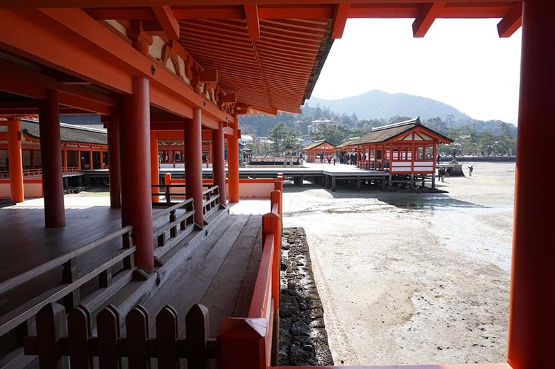
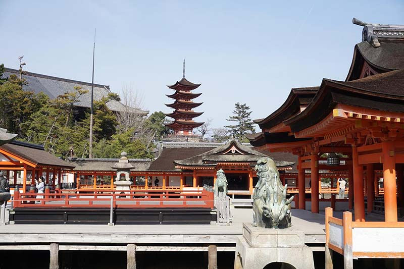
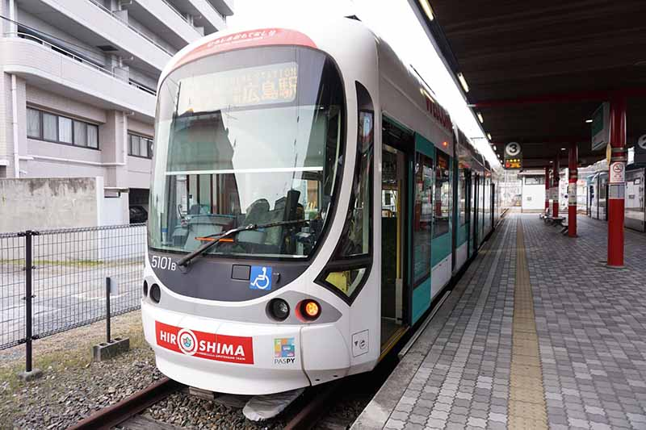

廣島城歷史
「嚴島神社修築於瀨戶內海海濱的潮間帶上，神社前方立於海中的大型鳥居是被譽為「日本三景」之一，為嚴島境內最知名的地標。 嚴島神社的大部分建築結構均被日本政府列為國寶，神社亦收藏許多國寶級的文物。 神社在1996年時與後方彌山的原始林區登錄於世界遺產名單中。

浮在海面上的「宮島」與「嚴島神社」
被稱為日本三景之一的「宮島」，位於日本廣島縣西南邊的瀨戶內海上，自古以來島嶼本身便是日本文化中自然崇拜的對象，並視為「神明居住的島嶼」，因此宮島對於當地人來說也具有這樣被敬拜的形象。地形方面，島嶼的最高峰「彌山」海拔為535公尺，以有著各式奇岩異石而聞名。實際上當「嚴島神社」登錄於世界遺產時，範圍可是涵蓋了嚴島神社建築整體，以及嚴島神社前方海域及後方彌山上的原始樹林唷！建造於海濱的嚴島神社，於海水退潮時神社地基處的潮間帶沙地會露出，而每到漲潮時便會呈現出整座嚴島神社漂浮於海面上的美麗樣貌。神社的建築本體外，於搭船前往宮島時就能夠瞭望到的海上巨大的朱紅色鳥居，是令人印象相當深刻的景色。
嚴島神社的古往今來
一般認為嚴島神社最初是創建於日本飛鳥時代的西元593年，至今約長達有1400年以上的悠久歷史。由於當時的自然信仰，使人們認為如砍伐島上的樹木或是開發土地等破壞島嶼的行為皆等同於傷害神明，因此最後便將嚴島神社蓋在海上。該求什麼最靈驗？嚴島神社祭祀的神明與保佑的利益恩德
嚴島神社現今主要祭祀的神明為包含「市杵島姬命」等三位女神合稱的「宗像三女神」，但其實隨時代演變，嚴島神社祭祀的神明也有所不同。像是在平安時代嚴島神社重建時，主要祭祀的神明為嚴島大明神。而來到嚴島神社，大家普遍會祈求保佑「航海平安」及「招財進寶」。

嚴島神社大鳥居整修已完成！
為了修復建於1875年的嚴島神社的大鳥居，自2019年6月17日起至2022年12月20日為止，大鳥居進行大規模的整修工程，目前工程已經完工。前進宮島！超詳細交通方式完整介紹
由於宮島如其名般就是個「離島」，因次搭乘大眾運輸的交通方式也很簡單，就是從距離島嶼最近的廣島「宮島口」搭乘渡輪前往即可抵達。若擔心宮島口渡輪的排隊人潮，也可考慮直接由廣島另一世界遺產「原爆圓頂」所在的「廣島和平紀念公園」出發，直接搭乘高速船前往宮島也相當方便。

地圖